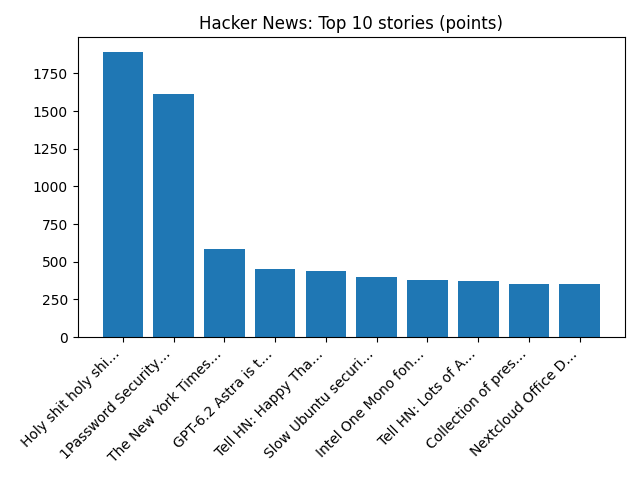

Second court defeat for Trump's deep-sea mining ambitions
BBC — Science
YOUR DAILY INTELLIGENCE BRIEF · 2026-11-26
Global watch: Second court defeat for Trump's deep-sea mining ambitions, US Marlboro maker Altria explores Imperial cash bid, possible carve-up - Reuters.
Northern Virginia: Thanksgiving storm downs trees across DMV, traps driver on GW Parkway - FOX 5 DC, Tornado Warning Today: Severe Storm Threatens Virginia on Thanksgiving, Residents Urged to Seek Shelter - Aktualita.co.

Global coverage includes Second court defeat for Trump's deep-sea mining ambitions; US Marlboro maker Altria explores Imperial cash bid, possible carve-up - Reuters; Police use tear gas to disperse fresh Bangladesh garment worker protests - Reuters. Local coverage includes Thanksgiving storm downs trees across DMV, traps driver on GW Parkway - FOX 5 DC; Tornado Warning Today: Severe Storm Threatens Virginia on Thanksgiving, Residents Urged to Seek Shelter - Aktualita.co.

Ba'ath Brigades
The Ba'ath Brigades (Arabic: كتائب البعث, romanized: Katā'ib al-Baʿth), also known as the Ba'ath Battalions, were a Syrian volunteer militia made up of Syrian Ba'ath Party members, almost entirely of Sunni Muslims from Syria and many Arab countries, loyal to the Ba'athist-led regime in power at the time.
https://en.wikipedia.org/wiki/Ba%27ath_Brigades
Eye in the Sky: The Milky Way over Lençóis
Runs so far today: 2